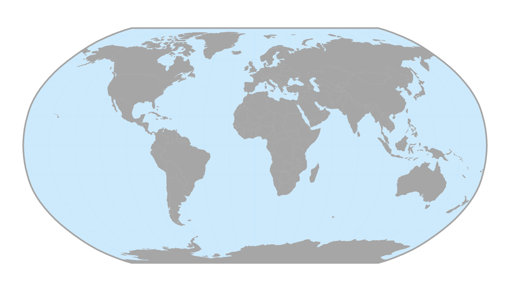
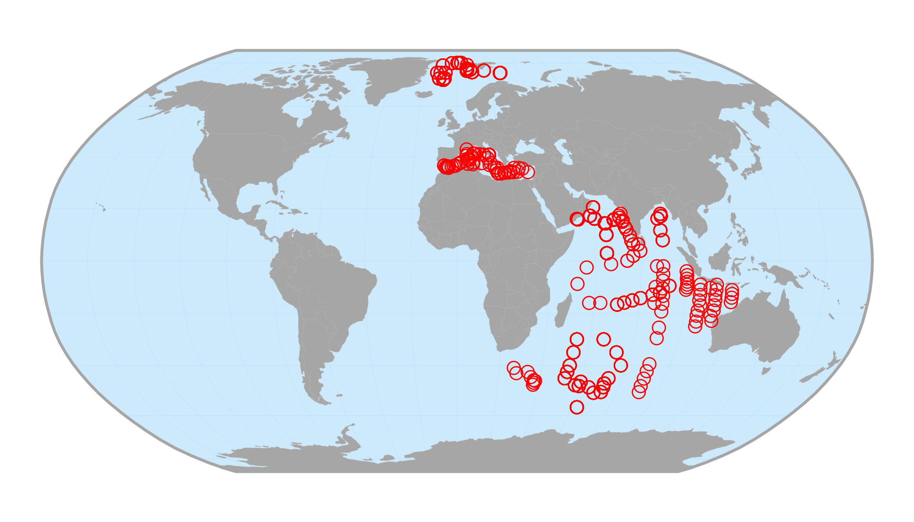

NOTE: THIS IS A WORK IN PROGRESS.
The package forcis provides a
lot of functions to visualize FORCIS data. This vignette shows how
to use and customize these functions.
Setup
First, let’s import the required packages.
Before going any further, we will download the latest version of the FORCIS database.
# Create a data/ folder ----
dir.create("data")
# Download latest version of the database ----
download_forcis_db(path = "data", version = NULL)The vignette will use the PUMP data of the FORCIS database. Let’s import the latest release of the data.
# Import pump data ----
pump_data <- read_pump_data(path = "data")NB: In this vignette, we use a subset of the PUMP data, not the whole dataset.
geom_basemap()
The function geom_basemap() can be used to easily add
World countries, oceans and bounding box to a ggplot2
object.
# World basemap ----
ggplot() +
geom_basemap()
These layers come from the Natural Earth website and are defined in the Robinson projection.
ggmap_data()
The function ggmap_data() can be used to plot FORCIS
data on a World map. Let’s map the PUMP data.
# Map raw pump data ----
ggmap_data(pump_data)
User can customize the aesthetic of the data:
# Customize map ----
ggmap_data(pump_data, col = "black", fill = "red", shape = 21, size = 5)
And add a title:
# Add a title ----
ggmap_data(pump_data) +
ggtitle("FORCIS Pump data")
This function works with the output of various functions available in
the forcis package. For example:
# Filter pump data ----
indian_pump_data <- filter_by_ocean(pump_data, ocean = "Indian Ocean")
# Map filtered data ----
ggmap_data(indian_pump_data)
Note that the forcis package is pipe-friendly.
# Same as before, but w/ the pipe ----
pump_data %>%
filter_by_ocean(ocean = "Indian Ocean") %>%
ggmap_data()You can export this map with the function ggsave() of
the package ggplot2.
# Map filtered data ----
indian_pump_data_map <- pump_data %>%
filter_by_ocean(ocean = "Indian Ocean") %>%
ggmap_data() +
ggtitle("FORCIS Pump data - Indian Ocean")
# Save as PNG ----
ggsave(indian_pump_data_map,
filename = "indian_pump_data_map.png",
width = 20,
height = 11,
units = "cm",
dpi = 300,
scale = 1.5,
bg = "white")